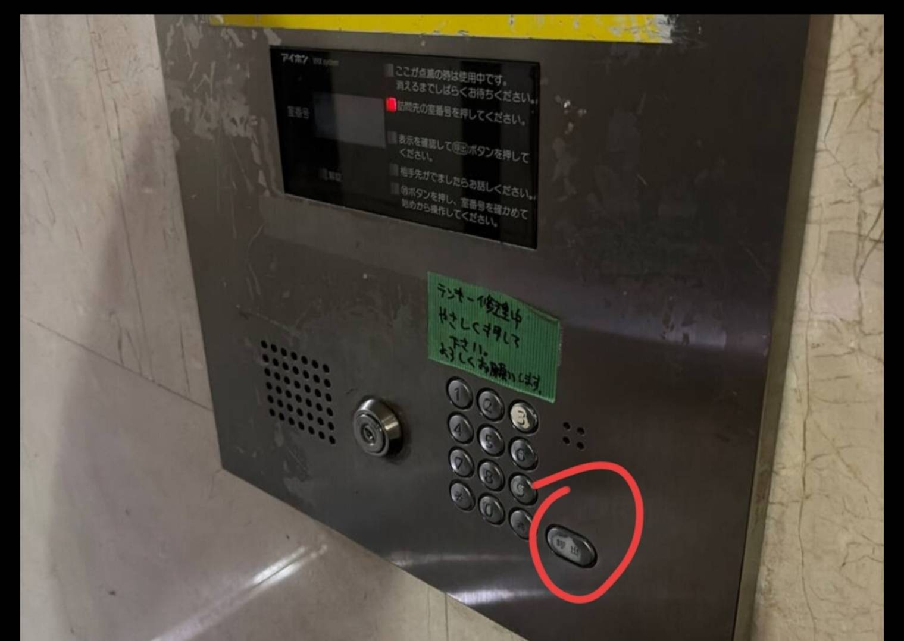

🚪 入室方法
- 1エントランス1階の郵便受け（808番）のダイヤルを合わせて開けてください。
左へ2回まわして 6、右へ1回まわして 1 → 引いて開く - 2郵便受けの中のキーボックスを取り出し、暗証番号を入力して鍵を取り出してください。
2525 - 3エントランスのオートロックは、最初に赤丸の呼出ボタンを押してから、3986を押してください。
3986 - 4エレベーターで8階へ。808号室のドアを鍵で開けてください。

📶 Wi-Fi
SSID
TP-Link_E61A_5G
パスワード
31260602
📍 住所
Plaza Feliz Onda Building 808, 2-65-1 Ikebukuro, Toshima-ku, Tokyo
〒171-0014 東京都豊島区池袋2-65-1 プラザフェリスオンダビル808